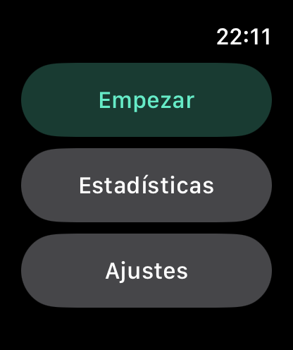
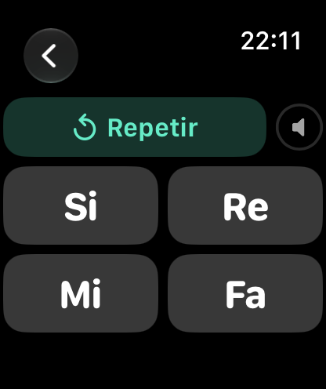
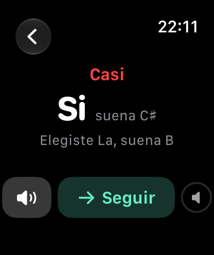
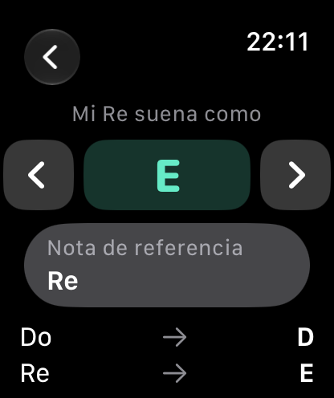
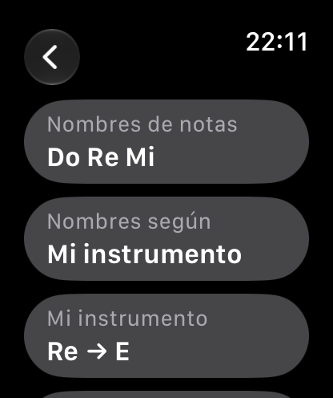
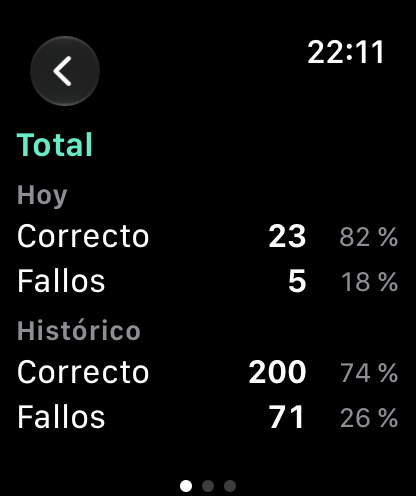

Doremi Teacher: Oído Musical
Entrenamiento auditivo en tu muñeca. Suena una nota y eliges su nombre entre cuatro. Elige Do Re Mi o A B C, practica las siete notas naturales o añade sostenidos y bemoles. ¿Tocas el saz u otro instrumento transpositor? Indica cómo suena tu Re y todos los nombres lo siguen. No necesitas iPhone.
Requiere watchOS 8 o posterior.
Descargar

Soporte
¿Tienes una pregunta, encontraste un error o necesitas ayuda con la app? Escríbenos. Leemos todos los mensajes.
Antes de escribir
Prueba primero esto:
- ¿La app no responde? Pulsa dos veces la Digital Crown para ver las apps abiertas y desliza hacia arriba la tarjeta de Doremi Teacher para cerrarla. Vuelve a abrirla desde la lista de apps.
- ¿No hay sonido? Gira la Digital Crown en una pantalla de práctica para subir el volumen. El sonido sale por el altavoz del reloj o por auriculares Bluetooth conectados.
- ¿Un pequeño icono de auriculares en el círculo de volumen? El sonido va a los AirPods u otros auriculares. El reloj guarda un volumen distinto para los auriculares y para su altavoz, y la Digital Crown ajusta el que está en uso.
- ¿Las notas suenan muy bajas en la muñeca? Los auriculares Bluetooth se oyen mucho mejor que el altavoz del reloj, sobre todo en un lugar ruidoso.
- ¿Los nombres no cuadran con tu instrumento? Abre Ajustes → Nombres según y comprueba si está en Estándar o en Mi instrumento. En Mi instrumento, revisa a qué nota suena tu Re.
- ¿Esperabas Do Re Mi y ves A B C? Abre Ajustes → Nombres de notas y cámbialo.
Preguntas frecuentes
- ¿Funciona sin mi iPhone?
Sí, es totalmente independiente. No existe app para iPhone. - ¿Hay límite de tiempo?
No. Repite la nota cuantas veces quieras antes de responder. Cada ronda termina con la respuesta correcta y un botón para volver a oírla. - ¿Qué hace «Mi instrumento»?
Algunos instrumentos nombran sus notas de forma distinta a la afinación de concierto. En muchas afinaciones del saz, la cuerda llamada Re suena en realidad Mi (E). Ajusta Mi Re suena como E y todos los nombres se desplazan con ella: Do suena D, Mi suena F♯, etc. La app toca entonces los sonidos que daría tu instrumento para esos nombres. - ¿Puedo usar Mi instrumento con nombres A B C?
No. A B C siempre indica la afinación de concierto. La opción de instrumento solo está disponible con Do Re Mi. - ¿Cómo se escriben los sostenidos y bemoles?
Con la grafía habitual de los cancioneros: C♯, E♭, F♯, G♯, B♭. El resultado puede mostrar también el otro nombre de la misma nota. - ¿En qué octava suenan las notas?
En torno a la quinta octava (C5 a B5), el registro que mejor se oye en el altavoz del reloj. No se evalúa la octava, solo el nombre de la nota. - ¿Qué cuenta en las estadísticas?
Solo las rondas completadas. Las repeticiones y las rondas que dejas sin responder no cuentan. - ¿Recuerda mis ajustes?
Sí. Los nombres de las notas, el ajuste de tu instrumento y el conjunto de notas se restauran al volver a abrir la app. - ¿Recopila datos?
No se recopila ni se comparte ningún dato. Los ajustes y los recuentos de práctica se quedan en el reloj.
Manual






Una ronda
- Toca Empezar. Suena una nota enseguida.
- Toca Repetir tantas veces como necesites.
- Toca uno de los cuatro nombres para responder.
- El resultado muestra Correcto o Casi, el nombre correcto y lo que elegiste. Toca el botón del altavoz para volver a oír la nota.
- Toca Seguir para una nota nueva.
Ajustes
- Nombres de notas: Do Re Mi o A B C.
- Nombres según: Estándar (Do es C, Re es D, etc.) o Mi instrumento.
- Mi instrumento: elige con los botones < y > a qué nota suena tu nombre de referencia. La referencia por defecto es Re. Debajo, una vista previa muestra cada nombre y la nota a la que sonará.
- Notas a practicar: Siete notas (los siete nombres sin alterar) o Con ♯ y ♭ (las doce).
Con Nombres según → Mi instrumento, Siete notas son los siete nombres sin alterar de tu instrumento, no las teclas blancas del piano. Así suena cada nombre en Estándar y en Mi instrumento con Re ajustado para sonar E. Todos los nombres suben los mismos dos semitonos:
| Nombre | Estándar | Mi instrumento (Re suena E) |
|---|---|---|
| Do | C | D |
| Re | D | E |
| Mi | E | F♯ |
| Fa | F | G |
| Sol | G | A |
| La | A | B |
| Si | B | C♯ |
Estadísticas
Las estadísticas guardan aciertos y fallos de Hoy y Histórico, cada uno con su porcentaje. Desliza de lado entre tres páginas: Total, Siete notas y Con ♯ y ♭.
Aviso legal
Política de privacidad
Última actualización: noviembre de 2026
Introducción
Bienvenido a Doremi Teacher. Nos comprometemos a respetar y proteger tu privacidad. Esta Política de privacidad describe qué información recopilamos, o en este caso no recopilamos, y cómo protegemos tu privacidad.
Información que no recopilamos
Doremi Teacher se ha diseñado sin recopilación de datos. No recopilamos, almacenamos, usamos, compartimos ni transferimos ningún dato personal de nuestros usuarios. La app funciona por completo en tu Apple Watch y no procesa ni guarda datos en ningún servidor.
La app guarda dos cosas en tu reloj: tus ajustes (nombres de notas, ajuste del instrumento, conjunto de notas) y tus recuentos de práctica (aciertos y fallos de hoy y del total). Se guardan solo en el reloj, nunca se envían a ningún sitio y se borran al eliminar la app.
La app no accede a la red ni al micrófono, no tiene cuentas de usuario, analíticas, publicidad ni código de terceros.
Servicios de terceros
Doremi Teacher no se integra con ningún servicio de terceros, como herramientas de analítica, redes publicitarias o redes sociales. No se comparte ningún dato con terceros.
Privacidad de los menores
Como no recopilamos ningún dato, cumplimos con las normas aplicables sobre la privacidad de los menores, como la ley estadounidense COPPA (Children's Online Privacy Protection Act).
Cambios en esta Política de privacidad
Podemos actualizar esta Política de privacidad de vez en cuando. Te recomendamos revisar esta página periódicamente. Los cambios entran en vigor en cuanto se publican aquí.
Contacto
Si tienes preguntas o sugerencias sobre esta Política de privacidad, escríbenos a: support [at] hoshinosoftware [dot] com